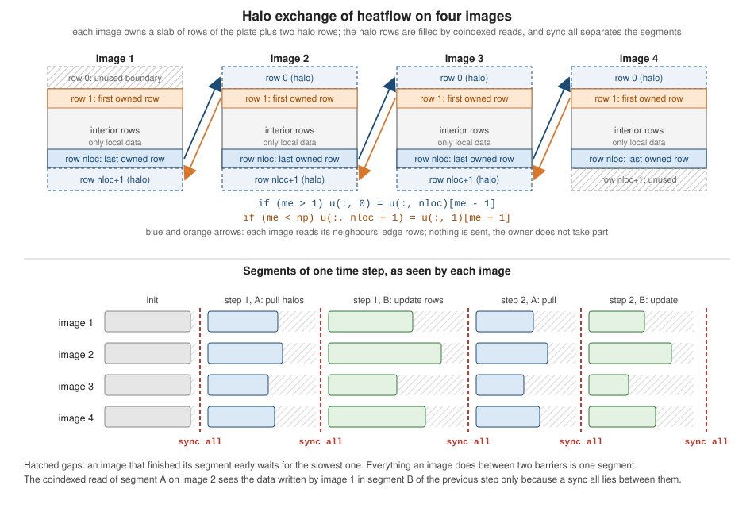

Coarrays, Images and Synchronization
|
This content was generated with the assistance of AI and should be verified against the official documentation before being relied on in production. |
This page is written against Fortran 2023 (ISO/IEC 1539-1:2023, J3/23-007r1) and was checked on 2026-10-19. Every
example was compiled with gfortran -std=f2023 -Wall -Wextra -pedantic -fimplicit-none -fcheck=all -fcoarray=lib (GNU
Fortran 16.2, linked with its libcaf_shmem runtime) and run with several images, without warnings, and the output shown
is real output. The main examples were also built with OpenCoarrays 2.10.3 (caf and cafrun) and gave the same
results. LLVM Flang 23 cannot run coarray programs in the toolchain used here (see Building and running), so no
Flang output is shown for this page. Examples that are deliberately wrong, or that expose a defect or a difference
between runtimes, are labelled as such and show what the tools really did; two of those are compiler or runtime
problems found while writing the page and are reported as observed, not explained. The rules are in six places in the
standard: coarrays and established coarrays are 5.4.7 and 5.4.8, the codimension attribute is 8.5.6, coindexed
objects and image selectors are 9.4.3 and 9.6, the effect of allocate and deallocate on coarrays is 9.7.1.2 and
9.7.3.2, the critical construct is 11.1.6, and image execution control (image control statements, segments, sync all,
sync images, sync memory, lock and unlock, and the stat= rules) is 11.7. The intrinsic functions are num_images
(16.9.156), this_image (16.9.208), image_index (16.9.107), lcobound (16.9.120), ucobound (16.9.216) and
coshape (16.9.64), and image termination is 5.3.6 and 5.3.7.
A Fortran program that uses coarrays is a single program, multiple data (SPMD) program: the same program is started as
a fixed number of copies, called images, numbered from 1. Each image has its own copy of every variable. A variable
declared with a codimension, a coarray, has the extra property that the corresponding variable on every other image
can be read and written directly, by writing the image number in square brackets after the name. There is no
message-passing library, no send and no receive: a remote read is an expression, a remote write is an assignment.
What the language does not give for free is ordering. Images run independently, so the program must say when one
image’s writes have to be visible to another image’s reads, and it does that with image control statements such as
sync all. Most of this page is about getting that ordering right. The running example, heatflow, uses the model for a
halo exchange: the plate is cut into slabs of rows, one per image, and neighbours read each other’s edge rows. The
collective subroutines (co_sum, co_max, …), teams, events and atomics, which build on this page, are covered in
Coarray Teams, Events, Collectives and Atomics;
the other parallel models are in
do concurrent and GPU Offload,
OpenMP and OpenACC and
MPI with mpi_f08, and allocate in general is in
Allocatable Arrays and Dynamic Memory.
Termination statements and stat= in other contexts are in
Error Handling and Program Termination.
The SPMD model in one page
Four facts define the model.
-
Images are fixed. The number of images is chosen when the program is launched, not by the program, and
num_images()returns it. Images are numbered1tonum_images()andthis_image()returns the number of the executing image. A program that must work with any number of images, including one, is the norm: a coarray program run with a single image is an ordinary serial program. -
Every image executes the whole program. There is no
mainthat spawns workers. Code that should run on one image only is guarded withif (this_image() == 1), as in the examples below. -
A coarray exists on every image.
real :: a(10)[*]creates an arrayaon each image, with the same type and shape. Without bracketsais the executing image’s own copy; with brackets,a(3)[5]is element 3 of image 5’s copy. -
Remote access is ordered only by image control statements. Between two image control statements an image runs freely, and what it reads from another image is not defined unless a
syncstatement (or acritical,lock,eventorallocateof a coarray) established an order. This is the segment rule, covered in Segments and ordering.
The standard says nothing about how the images are implemented. Note 2 of 5.4.7 describes two possibilities: a
shared-memory machine, where a coarray on every image is a sequence of arrays with evenly spaced starting addresses, and a
distributed-memory machine, where each image stores the coarray at the same virtual address in its own memory. In practice
the images are operating-system processes (OpenCoarrays over MPI, or GCC’s libcaf_shmem over shared memory) or, in other
implementations, threads.
The same idea in other languages is the process-and-shared-array model of MPI one-sided communication (covered in MPI with mpi_f08) and, in the PGAS family, UPC and Chapel. In Fortran the default is that every image owns its data and the other images may look at it only through the brackets.
Building and running
Coarrays need compiler and runtime support, and what is available differs a lot between toolchains. The table lists what was tried for this page; the details follow.
| Toolchain | Build and run | Observed here (2026-10-19) |
|---|---|---|
GNU Fortran 16.2 with GCC’s |
|
Works. Images are processes sharing memory. The default number of images is the number of cores. The library is in GCC’s own library directory, which here is |
GNU Fortran with OpenCoarrays 2.10.3 |
|
Works. |
GNU Fortran, single image |
|
Works. |
GNU Fortran without the option |
|
Rejects every coarray declaration ( |
LLVM Flang 23.1.4 |
|
Without the option: an error that multi-image features are disabled. With it: a warning that multi-image support is experimental, then a link failure because the PRIF runtime (Caffeine) is not installed |
Intel ifx, NAG, HPE Cray |
vendor options (for ifx, |
Not available here and not run; consult the vendor manuals |
GNU Fortran: -fcoarray
The -fcoarray= option takes none (the default: a coarray declaration or an image control statement is a compile-time
error), single (one image) or lib (library-based parallelism, which needs a coarray library to link against). The
GNU Fortran manual’s page on code-generation options also lists a shared keyword for shared-memory multithreading, but
the gfortran 16.2 binary used here rejects it:
gfortran: error: Unrecognized option: 'shared'
gfortran: note: valid arguments to '-fcoarray=' are: lib none singleNative multi-process support in GCC 16 is therefore -fcoarray=lib linked with libcaf_shmem instead of with OpenCoarrays.
The standard examples are built like this, from a scratch directory that holds heatflow_kinds.f90 (the kinds module of
the running example) and the example:
gfortran -std=f2023 -Wall -Wextra -pedantic -fimplicit-none -fcheck=all -fcoarray=lib \
heatflow_kinds.f90 01_hello.f90 -L/usr/local/lib/gcc/aarch64-linux-gnu/16.2.0 -lcaf_shmem -o hello
GFORTRAN_NUM_IMAGES=4 ./helloand with OpenCoarrays:
caf heatflow_kinds.f90 16_halo_exchange.f90 -o halo
cafrun -n 4 ./haloUnder -fcoarray=none the error is:
e9_flag.f90:3:13:
3 | real :: x[*]
| 1
Fatal Error: Coarrays disabled at (1), use '-fcoarray=' to enable
compilation terminated.and LLVM Flang 23 reports, without and with -fcoarray:
error: loc("/work/e9_flag.f90":1:1): Not yet implemented: Multi-image features are experimental and are disabled by default, use '-fcoarray' to enable.
LLVM ERROR: aborting
warning: Support for multi image Fortran features is still experimental and in development.
/usr/bin/ld: /tmp/e9_flag-969c49.o: in function `_QQmain':
FIRModule:(.text+0xc4): undefined reference to `_QMprifPprif_allocate_coarray'
FIRModule:(.text+0xf0): undefined reference to `_QMprifPprif_sync_all'
FIRModule:(.text+0x168): undefined reference to `_QMprifPprif_init'The Flang documentation’s standards-support page lists coarrays as one of the two major missing features of Flang and
describes the multi-image work as experimental support through PRIF, the Parallel Runtime Interface for Fortran, with
Caffeine (a Berkeley Lab library) as an implementation of that interface. In the container used here no PRIF runtime was
installed, so the link step fails and no Flang run is possible; a program that needs coarrays has to be built with
gfortran (or a commercial compiler) for now. The messages above are the first lines of the real output, abridged to the
undefined prif symbols for allocate, sync all and initialization.
Every example below was written to be identical for all three runtimes (libcaf_shmem, OpenCoarrays and single where
it makes sense). Where the runtimes behave differently, the text says so.
Images: this_image and num_images
num_images() and this_image() are transformational functions with no required arguments (16.9.156 and 16.9.208; both
also accept a team argument, covered in the teams page). Together they are the whole of the language’s process
management:
program hello_images
implicit none
print '(a,i0,a,i0)', 'hello from image ', this_image(), ' of ', num_images()
end program hello_imagesRun with four images:
hello from image 2 of 4
hello from image 3 of 4
hello from image 1 of 4
hello from image 4 of 4The four lines are in an arbitrary order, and the order changes from run to run: the images are not synchronized, and
the standard does not say how the files they write to are shared. Output is the first thing that shows the model. The
practical rule is that lines of different images interleave arbitrarily, so a program that wants ordered output either
gathers the data on one image and prints it there (the next example) or serializes the printing, which
sync images does with a chain of sync images statements.
Run with a single image the program prints hello from image 1 of 1, so a coarray program can always be tested without a
parallel runtime.
Coarrays and codimensions
A coarray is declared with the codimension attribute (8.5.6), usually written as a bracketed coarray-spec after the
name or after the array bounds. Compare the declaration of an array, whose extents are in parentheses, with that of a
coarray, whose cobounds are in brackets. Everything in the brackets describes how the images are arranged, not how
big the data is:
real :: x[*] ! a scalar coarray: one value per image
real :: a(10)[*] ! an array coarray: ten reals per image
real, codimension[*] :: y(10) ! the same, with the codimension attribute
real :: w(100, 100)[0:2, *] ! explicit-shape, corank 2: the images form a grid, 0:2 by an open 0:*
real :: b(4)[0:*] ! corank 1 with lower cobound 0
real, allocatable :: z(:, :)[:] ! allocatable coarray of corank 1 (deferred cobounds)The rules, with their clauses, are:
| Rule | Detail | Clause |
|---|---|---|
Corank and rank |
the sum of the rank and the corank of an entity cannot exceed fifteen (C822) |
8.5.6.1 |
What may be a coarray |
a variable or a component, never a function result, never of type |
8.5.6.1 |
Where it may be declared |
a coarray must be allocatable, |
8.5.6.1 |
Nonallocatable coarray |
has an explicit coshape: |
8.5.6.3 |
Allocatable coarray |
has a deferred coshape, only colons (C827); the cobounds are fixed when it is allocated |
8.5.6.2 |
Cobounds |
a lower cobound defaults to 1; the product of the sizes of all but the last codimension is the stride; the size of the last codimension is whatever is needed to cover |
8.5.6.3 |
Corresponding coarrays |
on every image of the team in which it is established, a coarray has the same type, type parameters, shape and cobounds |
5.4.7 |
Coindexed object |
a coarray name followed by an image selector |
9.4.3, 9.6 |
A coarray that is a derived type with allocatable or pointer components is allowed; the target of such a pointer is always on the same image as the pointer (Note 1 of 8.5.6.1). In Fortran 2023 an object whose type has a coarray component may also be an array or allocatable (see the provenance table at the end); that rule is not exercised here, and the ragged array below uses only the older rule, a coarray with an allocatable component.
Cosubscripts and image numbers
The cosubscripts of an image selector identify an image in the same way the subscripts of an array identify an element:
the image index is the position in the "array of images", in column-major order. With real :: a(10)[2, *] the images are
laid out as a two-row grid; image 1 is [1,1], image 2 is [2,1], image 3 is [1,2], and so on. The number of columns
is the number of images divided by two, rounded up. If the number of images is not a multiple of the product of the other
codimensions, the last column is incomplete (Note 1 of 5.4.7), and a cosubscript pair that names a position past the last
image is invalid (9.6; the example in the standard has A(10)[5,*] with 16 images, where A(:)[1,4] is image 16 and
A(:)[2,4] would be image 17). Three inquiry functions, all inquiry or transformational with a coarray argument, report
the layout, and two functions convert between image numbers and cosubscripts:
| Function | Result | Clause |
|---|---|---|
|
lower cobound of each codimension (a rank-one array), or of the one given by |
16.9.120 |
|
upper cobound; for the last codimension it is the value that covers all images |
16.9.216 |
|
|
16.9.64 |
|
the cosubscripts that identify the executing image |
16.9.208 |
|
the image number for a rank-one array of cosubscripts |
16.9.107 |
|
number of images |
16.9.156 |
The example prints all of them for a coarray of corank 2 and one of corank 1 with a nonstandard lower cobound, on five images, so that the rectangle is incomplete:
program codimensions
implicit none
real :: a(10)[2, *] ! corank 2: first codimension 1:2, last one open
real :: b(4)[0:*] ! corank 1 with lower cobound 0
integer :: me
me = this_image()
a = real(me)
b = real(me)
sync all
if (me == 1) then
print '(a,i0)', 'num_images() = ', num_images()
print '(a,2i3)', 'lcobound(a) =', lcobound(a)
print '(a,2i3)', 'ucobound(a) =', ucobound(a)
print '(a,2i3)', 'coshape(a) =', coshape(a)
print '(a,2i3)', 'lcobound(b), ucobound(b) =', lcobound(b, 1), ucobound(b, 1)
print '(a,i0)', 'image_index(a, [2,1]) = ', image_index(a, [2, 1])
print '(a,i0)', 'image_index(a, [1,2]) = ', image_index(a, [1, 2])
print '(a,i0)', 'image_index(a, [2,3]) = ', image_index(a, [2, 3])
print '(a,i0)', 'image_index(b, [0]) = ', image_index(b, [0])
print '(a,f4.1)', 'a(1)[1,3] = ', a(1)[1, 3]
print '(a,f4.1)', 'b(1)[4] = ', b(1)[4]
end if
sync all
if (me == 4) print '(a,2i3,a,i3)', 'on image 4: this_image(a) =', this_image(a), ' this_image(b) =', this_image(b)
end program codimensionsnum_images() = 5
lcobound(a) = 1 1
ucobound(a) = 2 3
coshape(a) = 2 3
lcobound(b), ucobound(b) = 0 4
image_index(a, [2,1]) = 2
image_index(a, [1,2]) = 3
image_index(a, [2,3]) = 0
image_index(b, [0]) = 1
a(1)[1,3] = 5.0
b(1)[4] = 5.0
on image 4: this_image(a) = 2 2 this_image(b) = 3Reading the output: with five images and [2, *] the grid has three columns (ucobound(a) is 2 3), of which the
last holds only image 5. Position [2,3] would be image 6, which does not exist, so image_index(a, [2,3]) is 0
and a(1)[2,3] would be an invalid reference. On image 4, this_image(a) is 2 2: row 2 of column 2. The last
codimension is always * in the declaration, and ucobound reports what it comes to. b has the lower cobound 0, so
image 1 is b[0], image 5 is b[4]; image_index(b, [0]) is 1.
Nothing detects an invalid cosubscript at run time in the toolchains used here. This program reads a(1)[2,3], which is
image 6 of five:
program bad_cosubscript
implicit none
real :: a(10)[2, *]
a = 0.0
sync all
if (this_image() == 1) then
print '(a)', 'reading a(1)[2,3], which is image 6 ...'
print '(f4.1)', a(1)[2, 3]
end if
end program bad_cosubscriptCompiled and run with five images (libcaf_shmem, -fcheck=all):
reading a(1)[2,3], which is image 6 ...
0.0It printed a value without any diagnostic. The program is not conforming (9.6 requires the value of a cosubscript to be
within the cobounds and the image index not to exceed num_images()), but -fcheck=all does not check image selectors
in this runtime, so it is a defect the programmer has to prevent, for example by testing image_index first.
Coindexed access: reading and writing the other images
A reference with an image selector is a coindexed object. It can be used anywhere a variable can be used, with restrictions listed below. The cheapest way to see how it differs from an ordinary access is to gather one value per image on image 1:
program gather
use heatflow_kinds, only: dp
implicit none
real(dp) :: t(0:3)[*] ! each image holds four temperatures
real(dp) :: total
integer :: me, np, k, img
me = this_image()
np = num_images()
t = [(real(me, dp)*10.0_dp + k, k = 0, 3)] ! local write: no cosubscript, no communication
sync all ! end of the segment in which every image defined t
if (me == 1) then
total = 0.0_dp
do img = 1, np
print '(a,i0,a,4f6.1)', 'image ', img, ' holds', t(:)[img] ! remote read
total = total + sum(t(:)[img])
end do
print '(a,f7.1)', 'sum over all images = ', total
end if
end program gatherimage 1 holds 10.0 11.0 12.0 13.0
image 2 holds 20.0 21.0 22.0 23.0
image 3 holds 30.0 31.0 32.0 33.0
image 4 holds 40.0 41.0 42.0 43.0
sum over all images = 424.0t = ... writes the executing image’s own copy and involves no communication. t(:)[img] is a remote read (a get),
and x[i] = ... would be a remote write (a put). The sync all in the middle is what makes the example correct:
without it image 1 could read t(:)[4] before image 4 had assigned t. Run with one image, the loop has one iteration
and the sum is 46.0.
The rules for coindexed objects, from 9.4.3, 9.6 and 15.5.2, are:
-
a coindexed object is a coarray name with an image selector; in a data reference there is exactly one
part-refwith an image selector, and it is the rightmost one that has nonzero corank. Soa(1)[3]andr[2]%vare valid andr%v[2]is not; -
a coindexed object cannot be a pointer target, and a data pointer and its target are always on the same image (10.2.2); the compiler rejects
q => x(:)[2]; -
a coindexed object can appear on either side of an assignment, but the
stat=anderrmsg=variables of an image control statement cannot be coindexed (C1180); -
an
allocateordeallocateobject cannot be coindexed: a pointer or allocatable component of a coarray can only be allocated by its own image (C955); -
an image selector can carry
stat=(the image has failed),team=/team_number=and, in Fortran 2023,notify=, all covered in the next page. Reference to a coindexed object of a failed image delivers a processor-dependent value (5.3.6).
Compile-time checks catch the structural mistakes. All of the following are real gfortran -std=f2023 -fcoarray=lib
diagnostics; each source file is one deliberate error:
e4_pointer_to_coindexed.f90:5:7:
5 | q => x(:)[2] ! a data pointer and its target are always on the same image
| 1
Error: Data target at (1) shall not have a coindex
e5_cosubscript_count.f90:5:19:
5 | print *, a(1)[3] ! corank is 2: two cosubscripts required
| 1
Error: Too few codimensions at (1), expected 2 not 1Segments and ordering
The rule that makes coarray programs correct or wrong is the segment rule of 11.7.2. Execution of an image control statement divides the execution sequence on an image into segments: the statements before the first image control statement, between two of them, and after the last. The image control statements are (11.7.1):
-
sync all,sync images,sync memoryandsync team; -
an
allocatewith a coarray allocate-object, and adeallocateof a coarray (or of an object with a coarray potential subobject component); -
change teamandend team,form team; -
criticalandend critical; -
event postandevent wait; -
lockandunlock; -
any statement that completes a block or procedure and so implicitly deallocates a coarray;
-
a call to
move_allocwith coarray arguments; -
stopand theendstatement of a main program.
Segments on different images are either ordered (one precedes the other, because of image control statements) or unordered, in which case they may run concurrently. The rule on shared data is (11.7.2): if a variable is defined, or becomes undefined, on an image in a segment, it shall not be referenced, defined, or become undefined in a segment on another image unless the segments are ordered. In other words, a read in one image of a value written by another image is valid only if a chain of image control statements guarantees that the write segment precedes the read segment, and the same for write after read and write after write. Two reads of the same variable need no ordering. Violating the rule is a data race: the program is not conforming, and nothing diagnoses it. The set of all segments on all images is a partial order (Note 1 of 11.7.2): segment Pi precedes Qj if and only if there is a sequence of segments from the first to the second in which each precedes the next, either because they are consecutive on the same image or because of image control statements.
Two more consequences follow from the definition. First, an image may keep a copy of a coarray in a register or cache
inside a segment (Note 4 of 11.7.2), so a loop that polls a coarray written by another image, without any image control
statement, may never see the change and cannot be made to work with plain coindexed reads; use sync memory, an atomic
subroutine (next page) or an event. Second, the compiler may move code within a segment as if it were the only image
executing (Note 3), so the assumption that statements run in source order across images is wrong unless ordered by an
image control statement.
sync all
sync all (11.7.3) synchronizes all images of the current team. On each image the segment after the statement is delayed
until every other image has executed sync all as many times as this one has. Everything that ran before the barrier
on any image precedes everything that runs after it on any other. It is the simplest, and for many programs the only,
image control statement needed. The standard’s own example (the form used in 11.7.3 and in the description of
num_images) is the broadcast pattern, which in heatflow terms is the distribution of a parameter from image 1:
program broadcast
use heatflow_kinds, only: dp
implicit none
real(dp) :: alpha[*] ! one diffusivity per image
integer :: i
if (this_image() == 1) then
alpha = 1.0e-4_dp ! "read the input" on image 1 only
end if
sync all ! segment 1 on image 1 precedes segment 2 on every image
if (this_image() == 1) then
do i = 2, num_images()
alpha[i] = alpha ! push the value into every other image
end do
end if
sync all ! the pushes precede every read below
print '(a,i0,a,es9.2)', 'image ', this_image(), ' has alpha = ', alpha
end program broadcastimage 1 has alpha = 1.00E-04
image 2 has alpha = 1.00E-04
image 3 has alpha = 1.00E-04Both barriers are needed. The first makes the write alpha = ... on image 1 precede the pushes alpha[i] = alpha (it does
not need to when the push is executed by the same image, but it keeps the pattern valid if another image did it), and
more importantly the second makes the pushes precede the read in print. With a missing barrier an image can print
its own old value. The number of sync all statements executed has to match on every image: it is an error for one
image to execute one more sync all than another, in which case the extra one waits for ever or until the other
images stop (see Termination and failed images). A sync all placed in an if that not all images take is therefore a
bug, and the commonest way to deadlock a coarray program.
sync images
sync images (image-set) (11.7.4) synchronizes only the executing image with the images in the set. The set is an integer
scalar, a rank-one integer array (with no repeated values), or * for all images. The two images correspond if
each executes a sync images that contains the other, the same number of times. It is cheaper than sync all when
only neighbours need to agree, and it is the tool for producer/consumer and pipeline patterns. The segments before a
sync images on either image precede the segments after the corresponding statement on the other, and nothing else
is ordered: the standard’s example of a circular chain notes that image 3’s segments before the statement are ordered
with those after it on images 2 and 4, but not with those on images 1 and 5.
Note 1 of 11.7.4 permits sync images (this_image()), so that code for an arbitrary number of images also works for one.
The following example uses sync images for the two classic patterns, a producer that all the others wait for, and a
chain that prints in image order:
program sync_images_demo
implicit none
integer :: setup[*], me, np
me = this_image()
np = num_images()
setup = 0
! Part 1: image 1 prepares data; every other image waits for image 1 only.
if (me == 1) then
setup = 42
sync images (*) ! pairs with the "sync images (1)" of every other image
else
sync images (1)
if (setup[1] /= 42) error stop 'setup not visible'
end if
! Part 2: a chain. Image k prints only after image k-1 has printed.
if (me > 1) sync images (me - 1)
print '(a,i0,a,i0)', 'image ', me, ' of ', np
if (me < np) sync images (me + 1)
end program sync_images_demoRun with four images:
image 1 of 4
image 2 of 4
image 3 of 4
image 4 of 4Part 1 shows the asymmetric form: image 1 waits for all the others with sync images (*), and each other image waits only
for image 1. Part 2 is the chain: image k waits for image k - 1 (sync images (me - 1)), prints, then releases
image k + 1. The output is therefore in order, which the unsynchronized program at the start of the page cannot promise.
The set * on one image does not require the others to use *: they need only to include image 1 in their set.
The same program with one, four and seven images printed one, four and seven lines in order.
sync memory
sync memory (11.7.5) ends one segment and begins another on the executing image without synchronizing with any other
image. It does what is needed to order memory operations across the boundary: all memory operations of the previous
segment are complete before any of the next begin, and the compiler cannot move them over it. It exists so that other
synchronization mechanisms that the compiler does not know about, such as a call to a C library, an atomic spin loop, or an
event-like construct built from atomics, can be made safe: the standard’s Note 2 of 11.7.5 shows a call to an external
synchronization routine bracketed by two sync memory statements. A sync memory alone, with no other image taking part
in ordering, orders nothing between images, and so is not a substitute for sync all or sync images. In modern programs
it is rarely written by hand, since atomics and events provide the ordering with their own semantics.
Deadlock and races, concretely
A race is a missing barrier; a deadlock is a mismatched one. The first is shown by deleting one sync all from the
halo exchange at the end of the page and running it with eight images four times. The results differ from run to run,
and differ from the correct result of 0.512 and 99.811976:
images=8 max= 0.499 sum= 98.540613
images=8 max= 0.496 sum= 98.038867
images=8 max= 0.499 sum= 98.607299
images=8 max= 0.502 sum= 99.043400Source: J3/23-007r1: 11.7.2 Segments
The wrong program (18_missing_sync.f90) differs from the correct one only in that the first sync all of the time
loop is absent. It is not diagnosed at compile time or at run time, and with two images it happened to give the correct
answer in one of two runs. A program that gives the right result on a few tries has shown nothing; correctness depends
on the ordering of image control statements, never on timing. The second failure mode, a sync all that not every image
reaches, makes the images that did reach it wait indefinitely. Nothing is shown here for it because the program, by
definition, does not terminate; the termination section below shows what the tools do when one image has gone away.
Mutual exclusion: critical, lock and unlock
Two statements serialize access to a resource shared by images. They differ in what they protect: a critical construct
is a block that one image at a time may execute, and a lock variable is a data object that images acquire and release
explicitly.
critical
A critical construct (11.1.6) limits the execution of its block to one image at a time. Its block cannot contain a
return or an image control statement (C1119), and a procedure invoked from it cannot execute one. If image M completes
the construct and image T is the next to execute it, the segment of M precedes that of T, so data written inside the block
is visible to the next image that enters it. The standard’s example is a global counter in a coarray on image 1:
program critical_counter
implicit none
integer :: counter[*]
integer :: i
counter = 0
sync all
do i = 1, 1000
critical
counter[1] = counter[1] + 1 ! read-modify-write of image 1's counter
end critical
end do
sync all
if (this_image() == 1) print '(a,i0,a,i0,a)', 'counter = ', counter, ' (expected ', 1000*num_images(), ')'
end program critical_counterFour images, 1000 increments each:
counter = 4000 (expected 4000)Without the critical the read-modify-write of counter[1] would lose updates. The sync all before the print is
there for the other reason: it makes all increments precede the read on image 1. critical is the simplest tool, but
all images contend for one global exclusion region, so it is for short sections that rarely run; see lock below for
finer-grained exclusion. Three compile-time checks are worth knowing:
e2_sync_in_critical.f90:6:13:
6 | sync all ! image control statement inside CRITICAL (C1119)
| 1
Error: Image control statement SYNC at (1) in CRITICAL block
e3_sync_in_pure.f90:4:11:
4 | sync all ! image control statement in a pure subprogram (C15109)
| 1
Error: Image control statement SYNC at (1) in PURE procedure
e8_do_concurrent.f90:5:13:
5 | sync all ! C1141
| 1
Error: Image control statement SYNC at (1) in DO CONCURRENT blockAn image control statement is not allowed in a pure procedure (C15109), in a do concurrent construct (C1141, 11.1.7.5)
or in a critical block. That is why the halo exchange cannot be hidden in a pure kernel: the kernels stay pure and
communication is done by the caller.
lock and unlock
A lock variable is a scalar of type lock_type from iso_fortran_env (16.10.2.19). Because it has to be shared it is
a coarray, usually a scalar one, and the lock actually used is the one on a chosen image, gate[1]. A lock is unlocked
when every component has its default value. lock (lock-variable) (11.7.10) acquires it, waiting if another image holds
it; unlock releases it. With acquired_lock= the statement does not wait: the logical variable becomes .true.
if the lock was acquired and .false. if another image holds it. The segments before an unlock on image M precede the
segments after the next successful lock of the same variable on image T. A failed acquired_lock= request does not
order anything. Locking a lock already held by the same image, and unlocking one not held by the executing image, are
error conditions (11.7.10). The next example uses the blocking form for mutual exclusion and the non-blocking form to
find out who holds the lock:
program lock_demo
use, intrinsic :: iso_fortran_env, only: lock_type
implicit none
type(lock_type) :: gate[*] ! one lock per image; only the one on image 1 is used
integer :: total[*]
integer :: me, i
logical :: got
me = this_image()
total = 0
sync all
! Blocking form: mutual exclusion around updates of total[1].
do i = 1, 500
lock (gate[1])
total[1] = total[1] + 1
unlock (gate[1])
end do
sync all
if (me == 1) print '(a,i0)', 'total = ', total
! Non-blocking form: acquired_lock= reports failure instead of waiting.
if (me == 1) then
lock (gate[1]) ! image 1 holds the lock ...
sync all ! ... while the others try
sync all ! the others have tried
unlock (gate[1])
else
sync all
lock (gate[1], acquired_lock=got)
print '(a,i0,a,l1)', 'image ', me, ' acquired = ', got
if (got) unlock (gate[1])
sync all
end if
sync all
if (me == 1) then
lock (gate[1], acquired_lock=got) ! nobody holds it any more
print '(a,l1)', 'image 1 acquires the free lock: ', got
if (got) unlock (gate[1])
end if
end program lock_demototal = 2000
image 2 acquired = F
image 4 acquired = F
image 3 acquired = F
image 1 acquires the free lock: TWhile image 1 holds the lock, the three others try with acquired_lock= and all get F; the lines of the others can come
in any order, as above. Compared with critical, a lock protects one specific piece of data, so images that work on
different locks do not interfere, and lock (q[k]) can protect the queue of image k (Note 3 of 11.7.10, which is the
standard’s work-queue example). Beware of spin loops around acquired_lock=: an image may wait a long time if others
lock and unlock frequently (Note 2 of 11.7.10).
Error conditions are reported through stat= and errmsg=, and the standard defines the values: stat_locked
for a lock of a lock held by this image, stat_unlocked for an unlock of an unlocked lock, stat_locked_other_image
for an unlock of a lock held by another image, and, for a lock where the image that held it has failed,
stat_unlocked_failed_image (16.10.2.29 to 16.10.2.33). Both runtimes were tried with this program on one image:
program lock_stat
use, intrinsic :: iso_fortran_env, only: lock_type, stat_locked, stat_unlocked
implicit none
type(lock_type) :: gate[*]
integer :: stat
character(len=64) :: msg
stat = -1
msg = ' '
unlock (gate, stat=stat, errmsg=msg) ! the lock is not locked
print '(a,i0,a,i0,2a)', 'unlock: stat=', stat, ' (stat_unlocked=', stat_unlocked, ') msg=', trim(msg)
lock (gate)
stat = -1
msg = ' '
lock (gate, stat=stat, errmsg=msg) ! already locked by this image
print '(a,i0,a,i0,2a)', 'relock: stat=', stat, ' (stat_locked=', stat_locked, ') msg=', trim(msg)
unlock (gate)
end program lock_statWith GCC’s libcaf_shmem:
unlock: stat=0 (stat_unlocked=0) msg=Variable
relock: stat=0 (stat_locked=1) msg=Alreadyand with OpenCoarrays 2.10.3:
unlock: stat=99 (stat_unlocked=0) msg=Variable is not locked
relock: stat=99 (stat_locked=1) msg=Already lockedBoth runtimes detect the error and set errmsg; neither assigns the value that iso_fortran_env declares for it. The
libcaf_shmem run leaves stat at zero (indistinguishable from success), truncates the message to its first word, and
stat_unlocked itself is zero in gfortran 16.2, although the standard says that stat is zero when execution is
successful. OpenCoarrays assigns the processor-dependent 99 in both cases. A program that must react to lock errors
therefore cannot rely on the specific named constants with these runtimes; check errmsg or avoid the situation by
construction. Also, stat_unlocked_failed_image (16.10.2.33) is not provided by iso_fortran_env in gfortran 16.2: naming
it is a compile-time error (Symbol 'stat_unlocked_failed_image' at (1) has no IMPLICIT type).
Allocatable coarrays
An allocatable coarray (8.5.6.2) is the form to use for data whose size is only known at run time, as in heatflow where
the number of rows per image depends on the number of images. Its allocate statement carries the cobounds in the
brackets, the last one always *:
real(dp), allocatable :: u(:, :)[:]
allocate (u(nx, 0:nloc + 1)[*]) ! cobound [1:*] (default lower cobound 1)
allocate (v(n)[0:*]) ! cobound [0:*]
allocate (w(3)[2, *]) ! corank 2allocate and deallocate of a coarray are image control statements with an implicit synchronization of all
active images in the current team (9.7.1.2, 9.7.3.2): execution after the statement on any image is delayed until all other
images have executed the same statement the same number of times, and the segments before it precede the segments after it
on all images. So the first access to a freshly allocated coarray by another image is always safe. The price is that the
allocation is collective, with rules the programmer must keep, none of which is checked by the compiler:
-
the dynamic type and type parameters, the bounds and the cobounds must be the same on every image (9.7.1.2). The rows of heatflow’s slabs are therefore the same on all images, here
nloc + 2including halos, and an image cannot allocate a larger slab without the others doing so; -
every image must execute the same
allocatestatement, in the same order with respect to other coarray allocations and deallocations. Two images waiting in differentallocatestatements deadlock (the standard’s Note in 9.7.1.2, and Note 5 of 11.7.2); -
a coarray can only become deallocated on an image if it is successfully deallocated on all active images;
-
an allocatable coarray cannot be
intent(out)(C848): the automatic deallocation on entry would be an unsynchronized image control statement; the compiler says:
e6_intent_out.f90:1:18:
1 | subroutine reset(u)
| 1
Error: Variable 'u' at (1) is INTENT(OUT) and can thus not be an allocatable coarray or have coarray components
e1_local_coarray.f90:4:11:
4 | real :: work(n)[*] ! automatic coarray: not permitted (C826)
| 1~~~~~~~~~
Error: Variable 'work' at (1) is a coarray and is not ALLOCATABLE, SAVE nor a dummy argument
The same implicit synchronization happens when a block or procedure ends and an unsaved allocatable coarray declared in it
is deallocated automatically, so an innocent-looking end block can deadlock a program if only some images reach it (an implicit deallocation is an image control statement, 11.7.1). The example shows an allocation with
cobounds, a two-dimensional coshape, a coarray of a type whose allocatable component has a different length on every
image, an explicit deallocate, and a block whose coarray is deallocated at end block:
program allocatable_coarrays
use heatflow_kinds, only: dp
implicit none
type :: ragged_t
real(dp), allocatable :: v(:) ! each image chooses its own length
end type ragged_t
real(dp), allocatable :: u(:, :)[:] ! allocatable coarray of corank 1, rank 2
real(dp), allocatable :: w(:)[:, :] ! corank 2
type(ragged_t) :: r[*] ! coarray of a type with an allocatable component
integer :: me, np, k
me = this_image()
np = num_images()
! Coarray allocation is collective: same type, bounds and cobounds on every image.
allocate (u(8, 0:5)[*]) ! implicit synchronization of all images
u = real(me, dp)
sync all
if (me == 1) then
print '(a,2i3)', 'shape(u) = ', shape(u)
print '(a,i0,a,i0)', 'cobounds of u = ', lcobound(u, 1), ':', ucobound(u, 1)
end if
allocate (w(3)[2, *]) ! the last cobound is always '*'
if (me == 1) print '(a,2i3)', 'coshape(w) = ', coshape(w)
! The allocatable component of a coarray is local to its image: lengths may differ.
allocate (r%v(me))
r%v = real(me, dp)
sync all
if (me == 1) then
do k = 1, np
print '(a,i0,a,i0)', 'size(r[', k, ']%v) = ', size(r[k]%v)
end do
end if
sync all
deallocate (w) ! also an image control statement: synchronizes
if (me == 1) print '(a,l1)', 'allocated(w) after deallocate: ', allocated(w)
block
real(dp), allocatable :: tmp(:)[:]
allocate (tmp(2)[*])
tmp = 0.0_dp
end block ! leaving the block deallocates tmp: synchronizes as well
if (me == 1) print '(a)', 'u is still allocated: ' // merge('yes', 'no ', allocated(u))
end program allocatable_coarraysThree images:
shape(u) = 8 6
cobounds of u = 1:3
coshape(w) = 2 2
size(r[1]%v) = 1
size(r[2]%v) = 2
size(r[3]%v) = 3
allocated(w) after deallocate: F
u is still allocated: yesThe allocatable component r%v is not subject to the rule that all images must agree: its allocation is local, only the
coarray r itself has to be the same everywhere (Note 1 of 9.7.1.1, "a pointer or allocatable component of a coarray can
only be allocated by its own image"). The sync all after the allocate (r%v(me)) is what makes the
reads r[k]%v safe: the allocation status of an allocatable subobject of a coarray is changed on one image, so no other
image may inquire about it until the segments are ordered (11.7.2). Such a ragged coarray, an array of images each holding
its own length, is how irregular distributions are expressed (see ragged_t above). The standard also forbids, for the
same reason, source= or mold= of a type that is lock_type, event_type, notify_type or team_type, or has such
a component, in the allocate of a coarray (C954, 9.7.1.1).
Coarrays in procedures and modules
A coarray can be a dummy argument, a module variable or a saved local, never an automatic or non-saved local (C826).
The rules for dummy coarrays are in 15.5.2.9:
-
the actual argument corresponding to a dummy coarray must be a coarray (the compiler rejects
call takes(a)for a noncoarraya, the diagnostic below); -
it needs the
contiguousattribute or an explicit or assumed size to be passed by reference: if the dummy is an array coarray withcontiguousor not of assumed shape, the actual argument must be simply contiguous or an element of a simply contiguous array (to avoid copy-in/copy-out, Note 1); -
a nonallocatable dummy coarray is established in the team in which the procedure was invoked, with its own cobounds. The invoked procedure can write
x(1)[p]to reach the coarray of imagep, associated with the actual argument on that image (Notes 2 and 3 of 15.5.2.9: the executing image has access, throughx[P], toa(10)on imagePwhen it calledsub(a(10))); -
an allocatable dummy coarray corresponds to an allocatable actual coarray, and the images must pass corresponding actual arguments in the same order, because
allocateanddeallocateare collective; -
a coarray dummy cannot be
intent(out)if allocatable (C848).
e7_noncoarray_actual.f90:12:13:
12 | call takes(a) ! actual argument is not a coarray
| 1
Error: Actual argument to 'x' at (1) must be a coarray
The module below puts the rules in a runnable form: an explicit-shape coarray dummy used to read a neighbour, an
assumed-shape coarray dummy passed a contiguous section, and a saved coarray in a module (total_calls), which is legal
because save makes it established in the initial team:
module slab_ops
use heatflow_kinds, only: dp
implicit none
private
public :: slab, left_edge, fill_assumed, tally, total_calls
integer, parameter :: slab = 4
integer, save :: total_calls[*] = 0 ! a saved coarray: legal anywhere a variable may have save
contains
! Explicit-shape dummy coarray with a constant extent; the cobounds are the dummy's own.
subroutine left_edge(x, edge)
real(dp), intent(in) :: x(slab)[*]
real(dp), intent(out) :: edge
integer :: me
me = this_image()
edge = 0.0_dp
if (me > 1) edge = x(1)[me - 1] ! coindexed read through the dummy
end subroutine left_edge
! Assumed-shape dummy coarray: the extents come from the actual argument. Used here without cosubscripts.
subroutine fill_assumed(x, value)
real(dp), intent(inout) :: x(:)[*]
real(dp), intent(in) :: value
x = value
sync all ! allowed: the procedure is not pure
end subroutine fill_assumed
subroutine tally()
total_calls = total_calls + 1
sync all
end subroutine tally
end module slab_ops
program coarrays_in_procedures
use heatflow_kinds, only: dp
use slab_ops, only: slab, left_edge, fill_assumed, tally, total_calls
implicit none
real(dp) :: a(slab)[*]
real(dp), allocatable :: b(:)[:]
integer :: me
real(dp) :: edge
me = this_image()
call fill_assumed(a, real(me, dp)) ! sync all inside
call left_edge(a, edge)
print '(a,i0,a,f4.1)', 'image ', me, ': left neighbour holds ', edge
sync all
allocate (b(10)[*])
b = real(me, dp)*100
sync all
if (me == 1) print '(a,f6.1)', 'b(4)[2] before = ', b(4)[2]
sync all ! the read above must finish before image 2 overwrites
call fill_assumed(b(4:7), 0.0_dp) ! a contiguous section is a coarray argument too
if (me == 1) print '(a,f6.1,a,f6.1,a,f6.1)', 'after: b(3)[2] = ', b(3)[2], ' b(4)[2] = ', b(4)[2], ' b(8)[2] = ', b(8)[2]
call tally()
call tally()
if (me == 1) print '(a,i0)', 'total_calls on image 1: ', total_calls
end program coarrays_in_proceduresThree images:
image 2: left neighbour holds 1.0
image 1: left neighbour holds 0.0
image 3: left neighbour holds 2.0
b(4)[2] before = 200.0
after: b(3)[2] = 200.0 b(4)[2] = 0.0 b(8)[2] = 200.0
total_calls on image 1: 2The call fill_assumed(b(4:7), 0.0_dp) passes a section of a coarray, which is itself a coarray because it has no
cosubscript and no vector subscript (5.4.7), so it can be a coarray actual argument. In the output, b(4)[2] is zero
and b(3)[2] and b(8)[2] are untouched. Two points about the program: the sync all that
fill_assumed and tally execute is legal because the procedures are not pure, and means that every image must call
them, in the same number of times: calling tally from an if (me == 1) would be a deadlock. And a first draft of
11_procedures.f90 contained a data race: image 1 printed b(4)[2] and, with no barrier, image 2 zeroed it. The
printed value was 0.0 instead of 200.0: the second sync all in the program is the fix. A parallel
program’s first bug is usually of this kind.
Two limitations of gfortran 16.2 with -fcoarray=lib were met in the process. Both were reproduced with the smallest
program shown, and neither is explained here; they are reported as observed so that a reader who meets them recognizes
them.
A coindexed reference in a module procedure with a dummy coarray of non-constant extent is an internal compiler error.
The extent n is a dummy argument:
module ice_demo
implicit none
contains
subroutine first_of_left(n, x, edge)
integer, intent(in) :: n
real, intent(in) :: x(n)[*] ! explicit-shape coarray dummy in a module procedure
real, intent(out) :: edge
edge = x(1)[1] ! coindexed reference
end subroutine first_of_left
end module ice_demo12_ice_module.f90:8:11:
8 | edge = x(1)[1] ! coindexed reference
| ^
internal compiler error: in expand_expr_real_1, at expr.cc:11648
Please submit a full bug report, with preprocessed source (by using -freport-bug).The same procedure compiles with -fcoarray=single, with an extent that is a constant (as in 11_procedures.f90,
where slab is a module parameter), or outside a module. The workaround is a constant extent.
A coindexed reference through an assumed-shape dummy coarray crashes at run time. This module procedure reads
x(1)[k]; with image 1 asking for itself it crashes as well:
module m
implicit none
contains
subroutine rd(x, edge, k)
real, intent(in) :: x(:)[*]
real, intent(out) :: edge
integer, intent(in) :: k
edge = x(1)[k]
end subroutine rd
end module m
program p
use m
implicit none
real :: a(4)[*]
real :: e
a = this_image()
sync all
call rd(a, e, this_image())
print *, 'own', this_image(), e
sync all
call rd(a, e, 1)
print *, 'img1', this_image(), e
end program pThree images with libcaf_shmem (the output is abridged to the cause; a first draft of 11_procedures.f90 that used this form crashed the same way with OpenCoarrays and with -O2, and the program above runs correctly with -fcoarray=single):
Program received signal SIGSEGV: Segmentation fault - invalid memory reference.
Backtrace for this error:
#3 0x401d64 in __m_MOD_rd
at /work/13_assumed_shape_coindexed.f90:8
ERROR: Image 2(pid: 17) failed with signal 11, exitstatus 0.Assumed-shape dummy coarrays work when used without cosubscripts (the fill_assumed routine above), and explicit-shape
and assumed-size dummies with constant extent work with coindexed references. Prefer the explicit-shape form with a
module parameter extent until the defects are fixed, and test the exact compiler version: nothing in the standard
makes these forms invalid.
Termination and failed images
An image terminates normally when it executes stop or reaches the end of the main program, and with error termination
when it executes error stop or in some other cases defined by the standard (5.3.7). The two models are different, and
both matter to a coarray program:
-
Normal termination happens only when all images initiate it, and it has three steps: initiation, synchronization, completion. All images synchronize at the second step, so no image starts the completion step until all have finished initiating. An image that has stopped stays a participant: its coarrays remain available to the others for reference or definition (Note 2 of 5.3.7). Each of the
end programstatements is therefore also an image control statement (11.7.1), with an implicit synchronization. -
Error termination starts on one image (by
error stop) and "once error termination has been initiated on an image, error termination is initiated on all images that have not already initiated error termination". The processor should do it as quickly as possible, and, if there is a process exit status, give a nonzero one.
An image can also be in a failed state (5.3.6): it has stopped participating without initiating termination, as when
its process is killed. Whether a processor can detect that is processor dependent; the standard makes stat_failed_image
positive if it can and negative if not. After a failure the data of nonfailed images become undefined if the failed image
was running a segment that might have defined them, except lock, event and notify variables. Image failure, the
intrinsic functions failed_images, stopped_images and image_status and the fail image statement belong to the
next page.
For the image control statements the standard offers two ways to handle a stopped or failed image. Without stat=,
an error condition in an image control statement initiates error termination (11.7.11). With stat=, execution continues
and the variable is set: to stat_stopped_image (positive) if one of the images involved has stopped, otherwise to
stat_failed_image if one has failed and no other error occurred, otherwise to a processor-dependent positive value.
errmsg= receives an explanatory message. For sync all, sync images and sync team with a stopped image the
effect is that of a sync memory (11.7.11). Both specifiers use a noncoindexed variable (C1180).
The two examples are the textbook ones. First error stop on image 3 while the others wait in sync all:
program error_termination
implicit none
sync all
if (this_image() == 3) error stop 'image 3 found a negative temperature'
sync all ! the other images are stopped here by the error termination
print '(a,i0)', 'never printed on image ', this_image()
end program error_terminationWith GCC’s libcaf_shmem (four images, 20 s time limit added by the test script):
ERROR STOP image 3 found a negative temperature
ERROR: Image 3(pid: 31) failed with signal 0, exitstatus 1.
exit=124The message was printed but the other three images stayed in sync all until the time limit killed them (exit=124 is the
timeout exit status): this runtime did not propagate the error termination. With OpenCoarrays the whole job ended:
ERROR STOP image 3 found a negative temperature
Abort(1) on node 2 (rank 2 in comm 0): application called MPI_Abort(MPI_COMM_WORLD, 1) - process 2Second, stop on image 2 only while the others execute sync all (stat=...), which is the situation the standard’s
stat_stopped_image is for:
program stopped_image
use, intrinsic :: iso_fortran_env, only: stat_stopped_image
implicit none
integer :: stat
character(len=80) :: msg
integer :: x[*]
x = this_image()
sync all
if (this_image() == 2) then
stop ! normal termination of image 2 only
end if
stat = -1
msg = ' '
sync all (stat=stat, errmsg=msg) ! needs image 2, which has stopped
if (this_image() == 1) then
print '(a,i0,a,i0)', 'stat = ', stat, ' stat_stopped_image = ', stat_stopped_image
print '(a,l1)', 'stat == stat_stopped_image: ', stat == stat_stopped_image
print '(a,i0)', 'x[2] is still readable after the stop: ', x[2]
end if
end program stopped_imageThis program is correct Fortran 2023, and in this toolchain it does not work as the standard describes. With libcaf_shmem
it printed STOP and then hung until the 20-second time limit killed it. With OpenCoarrays 2.10.3 the stop of
image 2 aborted the whole MPI job:
STOP
Abort(0) on node 1 (rank 1 in comm 0): application called MPI_Abort(MPI_COMM_WORLD, 0) - process 1Do not build a recovery strategy for stopped or failed images on these runtimes without testing the exact installation;
the language feature exists, and the most complete implementations are the commercial compilers and, in the future,
Flang with a PRIF runtime. What can always be relied on is that all the images should stop together, that a stop of
a single image is valid when the others do not need it any more, and that error stop terminates the program.
The heatflow halo exchange
The halo exchange puts the earlier sections together. The plate of the running example has nx = 41 columns and
ny = 40 rows. The rows are divided into slabs of nloc = ny/np consecutive rows, one per image; each image keeps its
slab in the coarray u(nx, 0:nloc + 1)[*], where row 0 and row nloc + 1 are the halo rows: copies of the last row of
the image below and the first row of the image above, which the stencil needs to update the edge rows of the slab.

Each time step has two segments separated by two barriers (the lower half of the figure): segment A reads the neighbours' edge rows into the halo rows; segment B updates the owned rows from the local data. The barrier between A and B is needed so that nobody overwrites an edge row in B before all neighbours have read it in A; the barrier after B is needed so that the new edge rows are complete before any neighbour pulls them in the next A. The hot spot and the boundary rows are placed by global row number, so that the result does not depend on the number of images:
! heatflow on a slab decomposition: each image owns nloc rows of the plate plus two halo rows.
program halo_exchange
use heatflow_kinds, only: dp
implicit none
integer, parameter :: nx = 41, ny = 40, nsteps = 200
integer, parameter :: hot_i = 21, hot_j = 20 ! global position of the hot spot
real(dp), parameter :: alpha = 1.0_dp, dt = 5.0e-5_dp
real(dp), parameter :: dx = 1.0_dp/(nx - 1), dy = 1.0_dp/(ny - 1)
real(dp), allocatable :: u(:, :)[:] ! rows 0 and nloc+1 are halo rows
real(dp), allocatable :: unew(:, :)
integer :: me, np, nloc, j0, jlo, jhi, i, j, n
real(dp) :: local_max, local_sum
me = this_image()
np = num_images()
if (mod(ny, np) /= 0) error stop 'the number of images must divide ny'
nloc = ny/np ! rows per image
j0 = (me - 1)*nloc ! global row = j0 + local row
jlo = merge(2, 1, me == 1) ! global row 1 is a fixed boundary
jhi = merge(nloc - 1, nloc, me == np) ! so is global row ny
allocate (u(nx, 0:nloc + 1)[*]) ! collective: implies synchronization
allocate (unew(nx, 0:nloc + 1))
u = 0.0_dp
unew = 0.0_dp
if (hot_j > j0 .and. hot_j <= j0 + nloc) u(hot_i, hot_j - j0) = 100.0_dp
sync all
do n = 1, nsteps
! Segment A: read the neighbours' edge rows into my halo rows.
if (me > 1) u(:, 0) = u(:, nloc)[me - 1]
if (me < np) u(:, nloc + 1) = u(:, 1)[me + 1]
sync all ! every pull has finished before anybody overwrites an edge row
! Segment B: purely local work.
do j = jlo, jhi
do i = 2, nx - 1
unew(i, j) = u(i, j) + alpha*dt*( &
(u(i - 1, j) - 2.0_dp*u(i, j) + u(i + 1, j))/dx**2 + &
(u(i, j - 1) - 2.0_dp*u(i, j) + u(i, j + 1))/dy**2)
end do
end do
u(2:nx - 1, jlo:jhi) = unew(2:nx - 1, jlo:jhi)
sync all ! the new edge rows are complete before the next step pulls them
end do
local_max = maxval(u(:, 1:nloc))
local_sum = sum(u(:, 1:nloc))
call co_max(local_max) ! collectives: see the next page
call co_sum(local_sum)
if (me == 1) print '(a,i0,a,f8.3,a,f12.6)', 'images=', np, ' max=', local_max, ' sum=', local_sum
end program halo_exchangeFour images:
images=4 max= 0.512 sum= 99.811976The decomposition is the point of the result: with 1, 2, 4, 5 and 8 images (the divisors of 40 that were tried) the
program printed the same images=N max= 0.512 sum= 99.811976 apart from N, so the parallel program agrees with the
serial one to the printed digits. The same was true under OpenCoarrays with four images. The program ends with co_max and
co_sum, collective subroutines that every image calls and that are the subject of the next page; they replace a manual
loop of coindexed reads. The two if statements in segment A and the choice of jlo and jhi keep the boundary
images correct: image 1 has no lower neighbour and global row 1 is a fixed boundary, and image np likewise for row ny.
The check mod(ny, np) /= 0 is done by every image before any synchronization, so all images stop together; when the number of images does not divide the number of rows
a real code would give the first mod(ny, np) images one row more, which requires the coarray extent to be the maximum
slab size.
Two barriers per step involve all the images even though each image only needs its neighbours. When the images are
many, sync images with the neighbour set restricts the waiting. The change is three lines: the set of neighbours is built once with
pack, and the two sync all of the time loop become sync images (nbr). A set of size zero (one image) is allowed and does
nothing:
integer, allocatable :: nbr(:) ! neighbouring images
...
nbr = pack([me - 1, me + 1], [me > 1, me < np]) ! 0, 1 or 2 neighbours
...
sync images (nbr) ! my pulls and my neighbours' pulls are over
...
sync images (nbr) ! my new edge rows are complete before my neighbours pull themThe full program is 17_halo_sync_images.f90. With eight images it printed images=8 max= 0.512 sum= 99.811976, the same
as the sync all version, with both libcaf_shmem and OpenCoarrays (four images). The neighbour form is correct here
because the ordering needed is only between neighbours (a pull by image k + 1 of the rows of image k, which is neighbour
synchronization) and the barrier is not needed for correctness; it is faster when load is unbalanced, since an image
that finishes early waits only for two others. The cost is the care needed: the set must be symmetric, as image k’s set
contains k + 1 exactly when that of image k + 1 contains k, and a mismatch deadlocks.
Standard version provenance and compiler support
| Feature | Introduced | Source of the claim |
|---|---|---|
Coarrays (declaration, coindexed access, the image control statements of this page) |
Fortran 2008 |
The GNU Fortran status page for Fortran 2008 lists coarrays: single-image support since GCC 4.6 and multi-image support through OpenCoarrays since GCC 5.1. J3/23-007r1 does not mark the edition of each statement, so none is claimed per statement |
|
Fortran 2018 |
Listed in the Fortran 2018 table of the LLVM Flang standards-support page; teams and collectives are the next page |
Object whose type has a coarray component may be an array or allocatable; put with notify; error conditions in collectives |
Fortran 2023 |
The Introduction of J3/23-007r1 and the Fortran 2023 table of the Flang page |
Compiler support, as found: gfortran 16.2 supports the language in this page with -fcoarray=lib (two defects noted
above, and no working stop or failed-image handling in the shared-memory library); Flang 23 has experimental support in the front
end and needs a PRIF runtime, which the toolchain here did not provide; Intel, NAG and HPE Cray document coarray
support for their compilers, and the NAG and Cray manuals and compiler options were not available for this page.
Where the books are outdated
Coarray chapters written before 2018 describe the language as it stood in Fortran 2008, and some assume that a
coarray program is a niche. Four points of the modern landscape differ. Teams, events, collectives, atomics and failed
images (Fortran 2018) and put with notify (Fortran 2023) are not part of the older description, and
are covered in the next page. A coarray program no longer needs a proprietary compiler: gfortran has run multi-image programs
since the OpenCoarrays integration, and GCC 16 ships its own shared-memory runtime (libcaf_shmem, selected with
-fcoarray=lib); the -fcoarray= keywords seen in the compiler’s own help are none, single and lib. LLVM Flang is
a newcomer with experimental coarray support. Finally, coarrays are one of four mainstream models in 2026, together with
do concurrent, OpenMP and MPI (separate pages), and the choice is made on the machine: coarrays and MPI for distributed
memory, do concurrent and OpenMP within a node, and a coarray program can be run on a single image for testing.
Pitfalls
-
Unordered segments. Reading what another image wrote without an image control statement between is not a diagnosed error and gives results that depend on timing (the
18_missing_sync.f90outputs above). -
Unmatched barriers.
sync allin anifthat not every image takes, or a different number ofsync allon different images, hangs the program. The same holds for coarrayallocateanddeallocate, which are collective. -
Assuming that output is ordered. Lines from different images interleave; gather or chain with
sync images. -
Invalid cosubscripts. Not checked at run time by the runtimes tried; use
image_indexor compute the neighbour carefully (me - 1on image 1 is image 0). -
Different bounds on different images in an
allocateof a coarray. Not diagnosed. -
Polling a coarray in a loop. No image control statement means the compiler may keep the value in a register (Note 4 of 11.7.2); use an event or an atomic.
-
Image control statements in
pureprocedures,do concurrentandcritical. Rejected at compile time, so the kernels of heatflow stay pure and communication stays in the caller. -
Local coarrays without
save. An error (C826); use an allocatable coarray, a module variable orsave. -
Relying on named
statconstants in this toolchain. The lock status values and the stopped-image behaviour did not match the standard in the runtimes tried. -
Relying on error termination in a shared-memory run.
error stopdid not stop the waiting images underlibcaf_shmemin the test above. -
Dummy coarrays with gfortran 16.2. Non-constant extent with a coindexed reference in a module procedure (internal compiler error) and assumed-shape with a coindexed reference (run-time crash).
-
Believing that a program that works is correct. A race may produce the right result for years on one machine.
See also Best Practices and Style and Common Gotchas and Pitfalls.